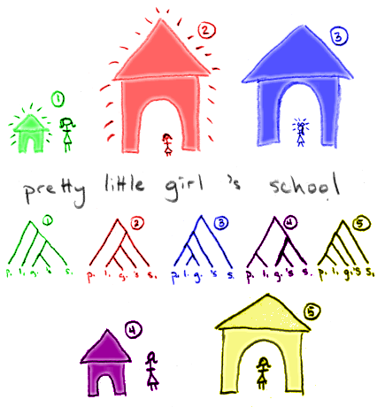

YAML Exploitation

Post.find_by_id(params[:id])
params[:id] = {:select => ‘; INSERT INTO admins …’}
params is a HashWithIndifferentAccess.
Post.find_by_id(‘select’ => ‘SQL …’) # NOPE
User.find_by_id(session[:user_id])
sessions comes from the cookieconfig/initializers/secret_token.rb
unless params[:token].nil?
user = User.find_by_token(params[:token])
user.reset_password!
end
[nil], [""] and [[]] are all not nil and not empty.type="symbol" and type="yaml"convert_json_to_yaml scans through the JSON, converting JSON syntax into
YAML equivalents.YAML.load.
---
foo:
- bar
- baz
---!ruby/object
x: 1
y: 2
AwesomeString.new(value).
--- !ruby/string:AwesomeString “foo bar baz”
AwesomeHash object and call
#[]= to populate it.
--- !ruby/hash:AwesomeHash
key: “hello\nworld”
#[]= that pass the key or value to eval or
system.
ObjectSpace.each_boject(Class).select { |klass|
klass.instance_methods.include?(:[]=)
}
exploit.rb file until you can successfully execute
puts 'hello'.
class EmailParser < Parslet::Parser
rule(:space) { match(‘\s’).repeat(1) }
rule(:space?) { space.maybe }
rule(:dash?) { match[‘_-‘].maybe }
rule(:at) {
str(‘@’) |
(dash? » (str(‘at’) | str(‘AT’)) » dash?)
}
rule(:dot) {
str(‘.’) |
(dash? » (str(‘dot’) | str(‘DOT’)) » dash?)
}
rule(:word) { match(‘[a-z0-9]’).repeat(1).as(:word) » space? }
rule(:separator) { dot.as(:dot) » space? | space }
rule(:words) { word » (separator » word).repeat }
rule(:email) {
(words.as(:username) » space? » at » space? » words).as(:email)
}
root(:email)
end
rule(:name) { ... } defines a parsing rule with the specified name.root :name defines which parsing rule to start at.str(...) matches a literal string.`repeat is equivalent of regex*.repeat(1) is equivalent to regex+.repeat(1,5) is equivalent to regex{1,2}.match(...) matches data against the specified regular expression.match['a-z'] is shorthand for match('[a-z']).| allows any one of multiple rules to be matched.>> requires multiple rules to be matched in succession..as(:name) tags the matched text with the specified name.
EmailParser.new.parse(“john dot smith AT gmail dot com”)
{:email=>[
{:username=>[
{:word=>”john”@0},
{:dot=>”dot”@5, :word=>”smith”@9}
]},
{:word=>”gmail”@18},
]}
class EmailSanitizer < Parslet::Transform
rule(:dot => simple(:dot), :word => simple(:word)) { “.#{word}” }
rule(:word => simple(:word)) { word }
rule(:username => sequence(:username)) { username.join + “@” }
rule(:username => simple(:username)) { username.to_s + “@” }
rule(:email => sequence(:email)) { email.join }
end
rule(:name => ...) { action } defines a pattern matching rule for the
Parslet tree.action whenever it encounters patternsimple(:name) matches a single String value.sequence(:name) matches an Array of String values.subtree(:name) matches a Hash within the Parslet tree.
EmailSanitizer.new.apply(EmailParser.new.parse(“john dot smith AT gmail dot com”)) # => “john.smith@gmail.com”
[nil], [""] and [[]].Loads one or more test files and selects the classes you want to mutate.
$ mutant -r ./spec/foo_spec.rb -r --rspec-full ::Foo
rake mutant task after writing tests.